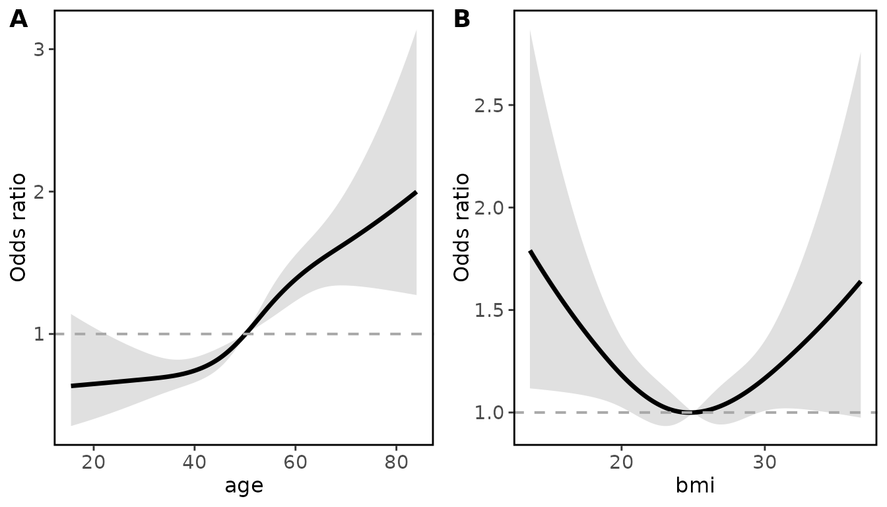
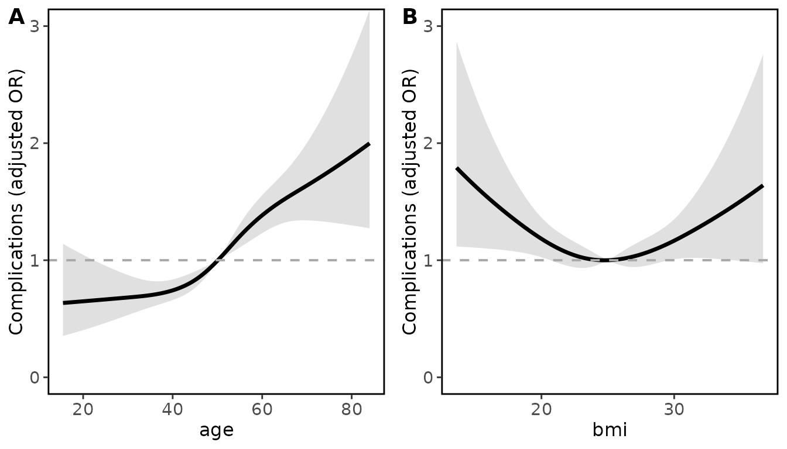
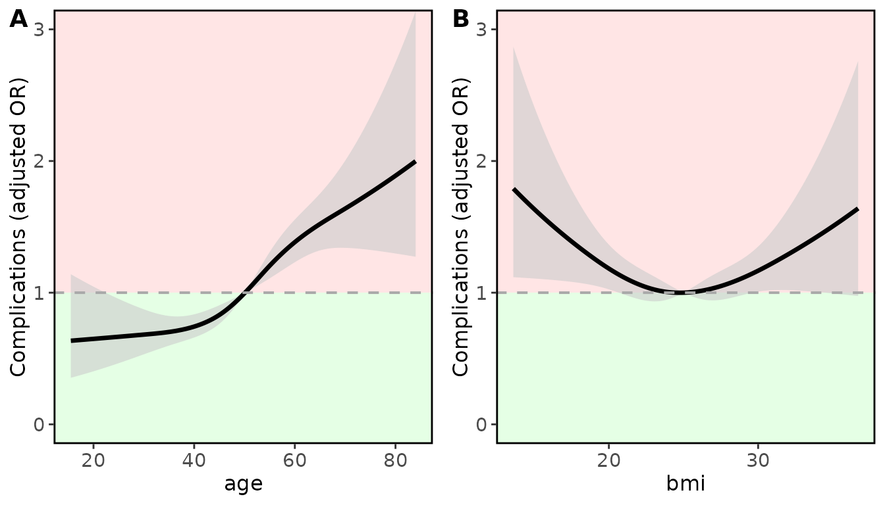
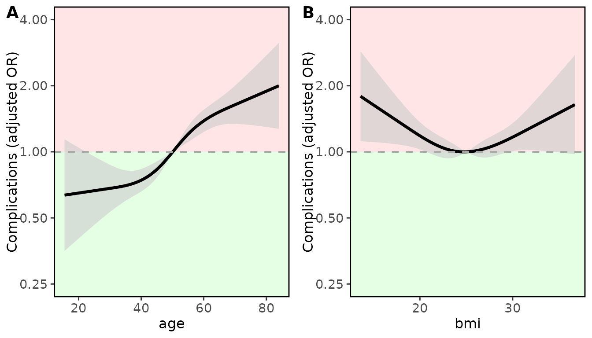
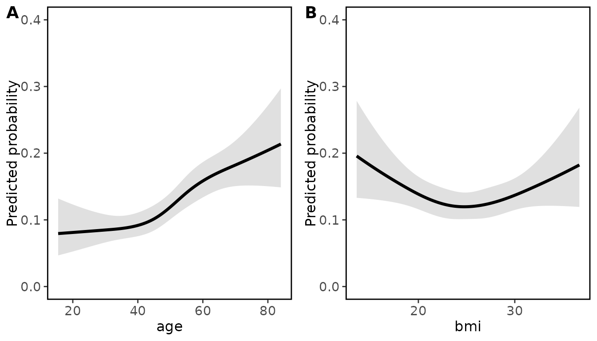
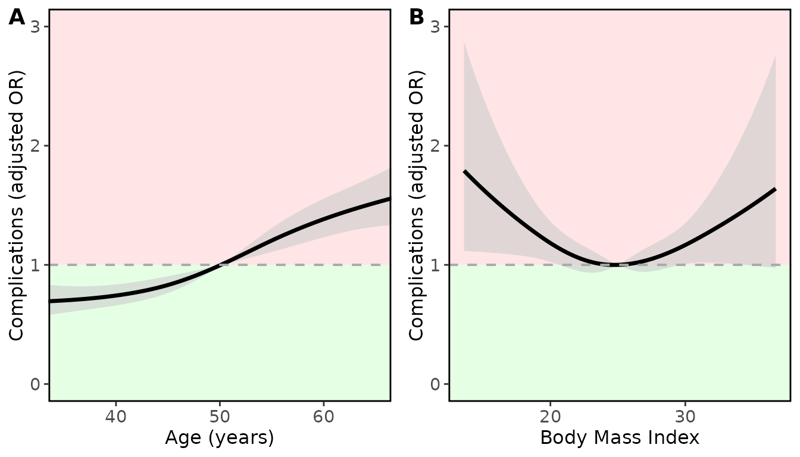
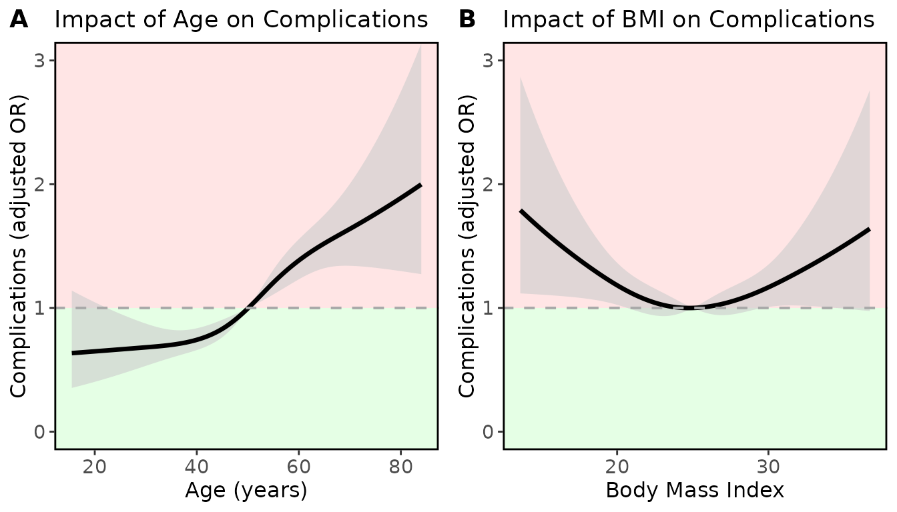
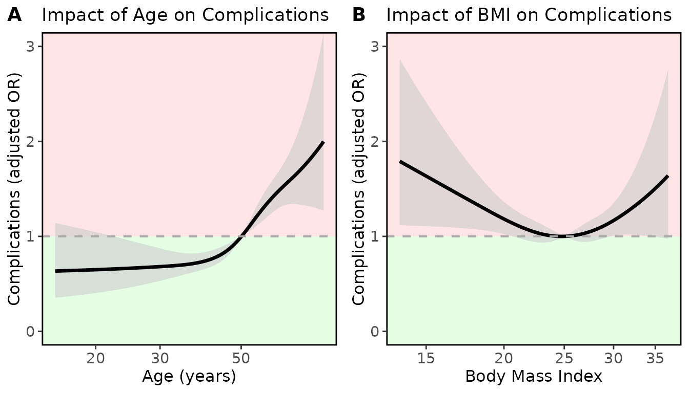
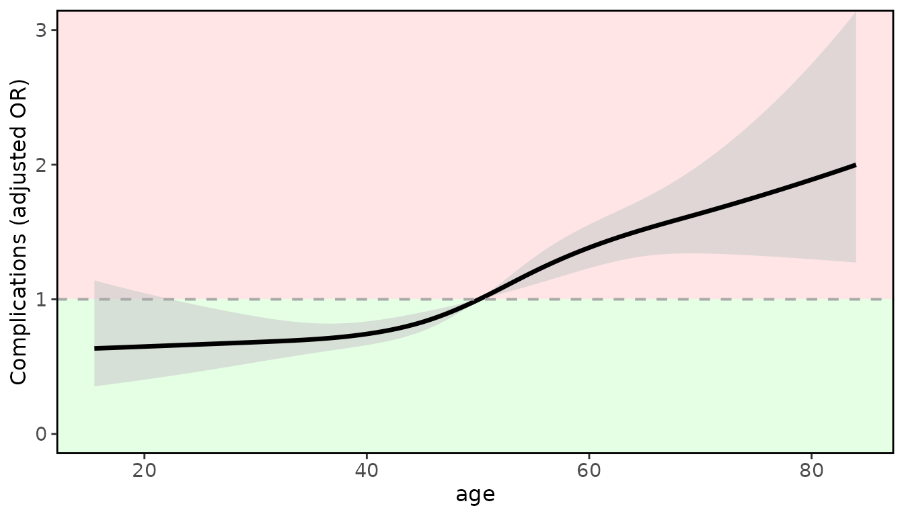
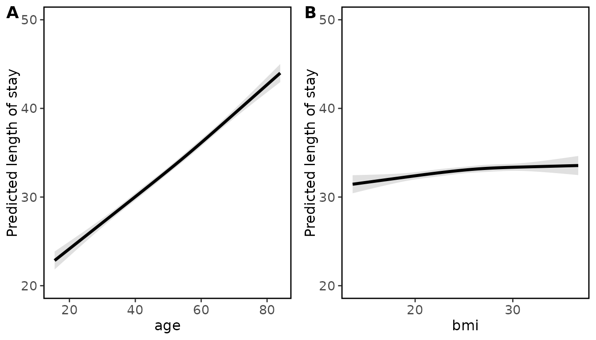

Introduction and setup
This vignette goes into further details for the ggrmsMD
function. For further package information and basic use please refer to
the vignette
Standard_workflow_with_restricted_cubic_splines.
For these vignettes we will use a simulated dataset to predict the impact of age, BMI, Sex and Smoking status on outcome after surgery. The models are for illustration purposes only.
# Load in the simulated data
data <- simulated_rmsMD_data()
# Set the datadist which is required for rms modelling
# (these two lines are standard)
dd <- datadist(data)
options(datadist='dd')
# Fit an OLS model including a restricted cubic spline
# for Age and BMI (with 4 knots)
fit_lrm <- lrm(
majorcomplication ~
rcs(age, 4) + # Age modelled using RCS with 4 knots
rcs(bmi, 4) + # BMI also modelled with RCS with 4 knots
sex + # Binary variable for sex
smoking, # Categorical variable for smoking status
data = data
)Plotting with ggrmsMD
Now that the model and overall p values have been assessed, the
ggrmsMD function from rmsMD can be used to
assess the relationship between variables modelled with restricted cubic
splines, and the outcome.
As a minimum, the model fit and data should be passed into the
function. ggrmsMD will then generate plots for all
variables which were modelled with restricted cubic splines. By default:
for linear regression models predicted outcome is plotted, for logistic
regression OR is plotted and for Cox regression HR is plotted. All of
these plots are adjusted for all other variables in the model.
All of the outputted plots are ggplots, and therefore can be further adapted using that framework.
Here is the most basic use case with the logistic regression model for post-operative complications above:
# most basic output
ggrmsMD(fit_lrm, data)
ggrmsMD has several additional options to improve these
plot outputs for publications. Some of these options are shown below.
For the examples below, this is done iteratively for demonstration
purposes.
Arguments which alter the y axis are applied to all plots. This is standardised as all plots have originated from the same regression model:
ggrmsMD(fit_lrm, data,
# custom y axis label
ylab = "Complications (adjusted OR)",
# set y axis limits so variables can be compared more easily
ylim = c(0,3)
)
Shading can be applied to these plots to make it clear which side of
the no-effect line represents inferior/superior clinical outcome. This
is achieved by setting shade_inferior to “higher” or
“lower”:
ggrmsMD(fit_lrm, data,
ylab = "Complications (adjusted OR)",
ylim = c(0,3),
# specifies that OR > 1 reflects poorer outcomes
# (e.g. higher OR complications) these will be highlighted in red
shade_inferior = "higher"
)
It may be preferable to have the y-axis on a log-scale rather than a linear scale.
# to have the y axis on a log-scale:
ggrmsMD(fit_lrm, data,
ylab = "Complications (adjusted OR)",
ylim = c(0.25,4),
shade_inferior = "higher",
log_y = TRUE, # have the y-axis on a log scale
log_y_breaks = c(0.25, 0.5 , 1, 2, 4) # optionally set the y-axis breaks
)
For logistic regression models like this one, predicted probability can be plotted instead of adjusted OR. For example:
# to plot predicted probability rather than adjusted OR.
# This is adjusted to mode/mean of the other variables
ggrmsMD(fit_lrm, data,
ylim = c(0,0.4),
lrm_prob = TRUE # set this to plot predicted probability
)
Changes to x-axis settings and titles are applied individually to each plot, unlike y-axis settings which apply globally across all plots. To customise individual x-axes, pass a named list. For example, to change the x-axis labels for both variables and set x-axis limits only for age:
xlabels <- list ("age" = "Age (years)",
"bmi" = "Body Mass Index")
xlimits <- list("age" = c(35,65))
ggrmsMD(fit_lrm, data,
ylab = "Complications (adjusted OR)",
ylim = c(0,3),
shade_inferior = "higher",
xlabs = xlabels,
xlims = xlimits
)
The same approach is used if titles are required:
xlabels <- list ("age" = "Age (years)",
"bmi" = "Body Mass Index")
titles <- list ("age" = "Impact of Age on Complications",
"bmi" = "Impact of BMI on Complications")
ggrmsMD(fit_lrm, data,
ylab = "Complications (adjusted OR)",
ylim = c(0,3),
shade_inferior = "higher",
xlabs = xlabels,
titles = titles
)
The x-axis can also be displayed on a log-scale, rather than a linear
scale. This is done using log_x_vars to specify which
variables to have log-scaled x-axes:
ggrmsMD(fit_lrm, data,
ylab = "Complications (adjusted OR)",
ylim = c(0,3),
shade_inferior = "higher",
xlabs = xlabels,
titles = titles,
log_x_vars = c("age", "bmi")
)
combined is set to TRUE by default to
output a single combined plot, as shown above.
combined = FALSE can be used to output a list of plots. If
a single plot is required, this can be achieved with the
var argument:
ggrmsMD(fit_lrm, data,
ylab = "Complications (adjusted OR)",
ylim = c(0,3),
shade_inferior = "higher",
var = "age"
)
For linear regression models the output is the predicted outcome. For example, here are the plots for length of stay linear model:
fit_ols <- ols(
lengthstay ~
rcs(age, 4) +
rcs(bmi, 4) +
sex +
smoking,
data = data
)
ggrmsMD(fit_ols, data,
ylim = c(20,50),
ylab = "Predicted length of stay"
)